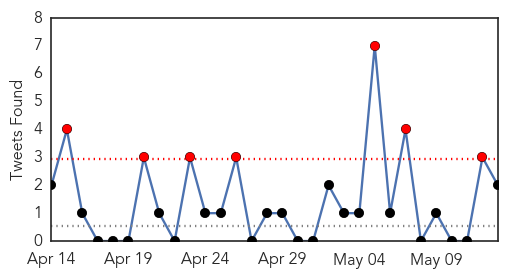
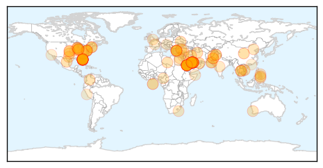

Pertussis
30-Day Web Trend
6 alerts, 3 warnings

30-Day Twitter Trend
0 alerts, 0 warnings

Article Locations

Article Confidences

Top Articles:
-
No articles found for May 13, 2014
Top Tweets:
-
No tweets found for May 13, 2014
Unknown
30-Day Web Trend
4 alerts, 2 warnings

30-Day Twitter Trend
2 alerts, 3 warnings

Article Locations
Article Confidences

Top Articles:
- 1.000
- 2 hospital employees have flu-like symptoms after contact with second MERS case in Fla.
- 1.000
- 2 hospital employees have flu-like symptoms after contact with second MERS case in Fla.
- 1.000
- 2 hospital employees have flu-like symptoms after contact with second MERS case in Fla.
- 1.000
- Orlando MERS case sparks questions
- 1.000
- Man visiting Florida is second MERS case reported in US
- 1.000
- Q&A: MERS case raises questions
- 1.000
- Hospital workers in contact with MERS patient display flu-like symptoms
- 0.999
- UPDATE 2-U.S. confirms second case of MERS, this time in Florida
- 0.999
- Indiana Hospital That Treated First MERS Case in United States Gets Clean Bill of Health
- 0.999
- Second Case of MERS Identified in US
- 0.999
- Deadly Virus: Tourists brings first case to Orlando, Florida
- 0.999
- MERS virus exposure: US hospital workers fall ill
- 0.999
- US, florida officials confirm second case of MERS
- 0.999
- Two florida hospital workers who treated MERS patient fall ill
- 0.999
- 2 Florida Hospital Workers Who Treated MERS Patient Fall Ill
- 0.999
- Second US Mers case found in Saudi resident
- 0.999
- 2 Florida Hospital Workers Who Treated MERS Patient Fall Ill
- 0.998
- LA County on high alert for threat of MERS
- 0.998
- Middle East Online
- 0.998
- 2 Florida Hospital Workers Who Treated MERS Patient Now Sick
- 0.998
- The World On Arirang
- 0.998
- Deadly MERS Virus Detected In Florida
- 0.998
- Hospital Workers Exposed to MERS Virus Awaiting Test Results
- 0.997
- As MERS hits U.S., scientists search for causes, treatments
- 0.997
- Two Orlando health workers ill after exposure to MERS patient
- 0.997
- 2nd MERS patient spent 4 hours in busy ER waiting room
- 0.996
- Officials: Two Florida health care workers have flu-like symptoms after treating MERS patient
- 0.995
- 1 More Confirmed Case in Florida Plus 2 More Exposed to Virus
- 0.995
- US reports third case of potential MERS virus
- 0.992
- Second U.S. MERS case reported
- 0.991
- Two Orlando health workers ill after exposure to MERS patient
- 0.990
- Local doctor's thoughts on MERS
- 0.989
- The Portland Press Herald / Maine Sunday Telegram
- 0.989
- Florida MERS patient still has fever
- 0.989
- 22 hospital workers being monitored for rare MERS virus
- 0.988
- Second US case of MERS confirmed in FL
- 0.988
- MERS virus: 20 Florida hospital workers being monitored for symptoms
- 0.983
- US REPORTS SECOND CASE OF MERS VIRUS
- 0.982
- Second US Case of Deadly MERS Virus Confirmed
- 0.981
- MERS Case Confirmed In Orlando
- 0.980
- MERS-CoV: Health workers return to hospital
- 0.980
- MERS-exposed hospital workers in Munster, Indiana, return to work
- 0.975
- Obama briefed on US MERS cases
- 0.974
- Hospital Employees Test Negative For MERS, Cleared To Work
- 0.973
- Obama briefed on US MERS cases
- 0.969
- Obama briefed on U.S. MERS cases, White House says
- 0.968
- US MERS patient still has fever
- 0.967
- Two U.S. health care workers fall ill after treating patient with MERS
- 0.964
- Carney confirms Obama 'has been briefed' on MERS outbreak
- 0.963
- Second Case of MERS Confirmed in U.S.
Showing top 50 articles...
Top Tweets:
- 0.650
- RT: International Health Regulations Emergency Committee at will announce tomorrow whether MERS is public health emergency of…
- 0.603
- RT: 2 healthcare workers at Orlando hospital who had contact with 2nd MERS case have flu-like symptoms.Waiting for test re…